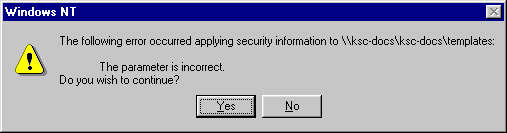
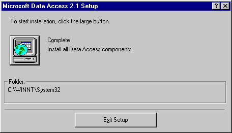
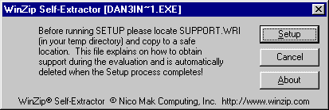
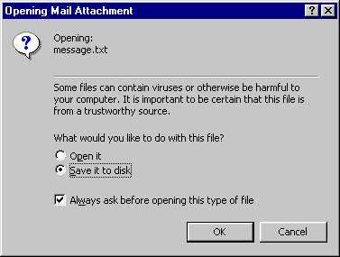
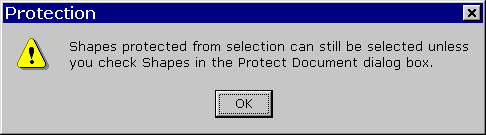

Oh, yes, I see exactly what I did wrong.

Quick! Where's "the large button"?

If SUPPORT.WRI is such an important document, why doesn't the installation program "copy to a safe location"?

I suppose there's a first time for everything -- Microsoft is trying too hard to protect users against viruses. Fnord.

This came up in my attempt to learn how to use Visio, which deserves a rant unto itself.
For more exemplars of bad software design, of course, you must visit the Interface Hall of Shame. Also, some old-timers have contributed to a canonical list of error messages from UNIX, TEX, PL/I, and other classics.
Seth Gordon -- sethg@ropine.com -- June 2000 -- comments?